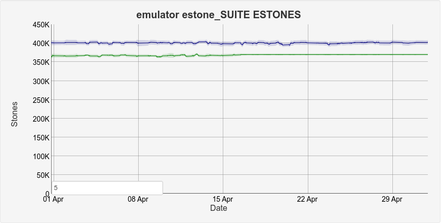
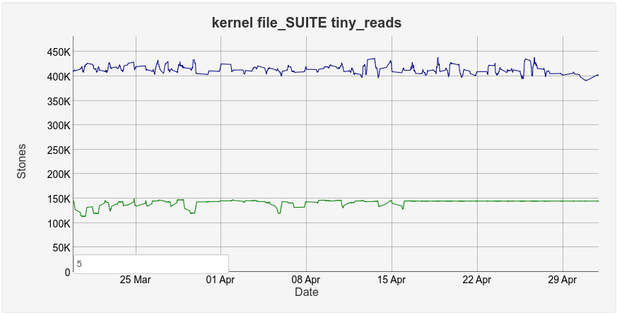
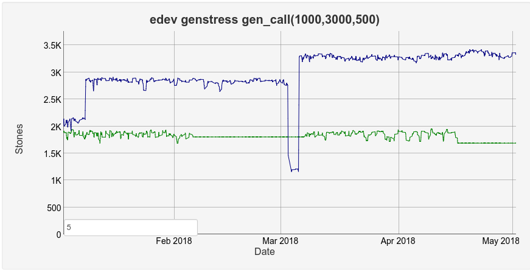

My OTP 21 Highlights
OTP-21 Release Candidate 1 has just been released. I thought that I would go through the changes that I am the most excited about. Most likely this will mostly mean features in erts and the core libraries as those are the changes that I am the most familiar with.
You can download the readme describing the changes here: OTP 21-RC1 Readme. Or, as always, look at the release notes of the application you are interested in. For instance here: OTP 21-RC1 Erts Release Notes.
Compiler / Interpreter #
Björn Gustavsson has been doing a lot of work with the compiler and interpreter the last year while I have been sitting next to him cheering. The largest changes is part of the OTP-14626 ticket. While working on the BEAMJIT development I’ve been looking a lot at the luajit project and what Mike Pall has done both in the JIT but also in the interpreter. Inspired by this and some other ideas that we got from the BEAMJIT project we decided it was time to do a major overhaul of the way that the BEAM interpreter is created. Most of the changes done boil down to decreasing the size of beam code in memory, thus making more code fit in the L1/L3 caches and in extension making code run faster. We’ve decreased the loaded code size by about 20% using our optimizations. This has translated to about a 5% performance increase for most Erlang code which is quite amazing. Me or Björn will most likely write more about exactly what this has entailed in a future blogpost.
Another compiler change that has had quite a large impact (at least in our benchmarks) is OTP-14505 contributed by José Valim in PR 1080. The change makes the compiler re-write:
example({ok, Val}) -> {ok, Val}.
to
example({ok, Val} = Tuple) -> Tuple.
eliminating the extra creation of the tuple. As it turns out this is a quite common pattern in Erlang code so this will be good for all programs.
An example of this performance gain can be seen in the estone benchmarks SUITE below. OTP-14626 together with some other compiler and erts improvements have increased the number of stones from 370000 in OTP-20.3 (the green line), to 400000 in OTP-21 (the blue line). So about 7.5%.

Erlang run-time system #
There are many changes in the run-time system.
File handling #
All file IO has traditionally been handled through a port. In OTP-21 all of the file IO has been rewritten to use nifs instead, OTP-14256. This was mainly done in order to run file operation in the dirty IO schedulers. It also had the nice side-effect of significantly increasing throughput of certain operations.

For instance in the tiny reads benchmark OTP-21 (the blue line) is about 2.8 times faster than OTP-20.3 (the green line).
Also it is now possible to open device files using file:open, see OTP-11462.
I/O Polling #
The entire underlying mechanism for checking for I/O on sockets has been rewritten and optimized for modern OS kernel polling features. See OTP-14346 and I/O polling options in OTP 21 for more details.
Distribution #
It has always been possible to write your own distribution carrier if you want to if, for instance, you wanted to use RFC-2549 to send your distributed Erlang messages. However you have had to implement it as a linked-in driver. With the introduction of OTP-14459 you can now use a process or port as the distribution carrier. So now you can use gen_pigeon instead of having to call the boost equivalent.
The ability to use processes as distribution carriers is now used by the TLS distribution. This allows us to not have to jump through several hoops as was done before increasing the throughput of TLS distribution significantly.
Process signals #
When running benchmarks using cowboy and hammering it with connections that do not use keep-alive, one of the SMP scalability bottlenecks that pop up is the link lock of the supervisor that supervises all the connections. The reason why this lock pops up is because when you have a lot of linked processes, the rb-tree in which the links are stored becomes very large so the insertion and deletion time increases. In OTP-14589 this has been changed so that all link and monitor requests now are sent as messages for the receiving process to take care of. This means that the lock has been completely removed. Now all signals (be they messages, links, monitors, process_info, group_leader etc) are handled through the same queue.
In addition, OTP-14901 now makes it so that monitor + send signals are merged into one signal. So the contention is reduced even further for gen_server:call like functions.

The performance difference is quite significant. The genstress benchmark seen above OTP-21 (the blue line) has almost doubled in throughput compared to OTP-20.3 (the green line).
Logger #
OTP-13295 adds a completely new logging framework for Erlang/OTP. It is inspired by the way that lager, the Elixir Logger and the Python logger works. With logger the logging handlers can intercept the logging call in the process that does the actual call instead of having to wait for a message. This opens up all sorts of possibilities of early rejection of log messages in case of an overload, see Logger User’s Guide for more details. The user can also add special purpose filters that are run before the handler is invoked in order to silence or amend log messages in the system.
Misc #
HiPE has finally been fixed by Magnus Lång to use the receive reference optimization that beam has had for a long time, OTP-14785.
The ftp and tfpt parts of inets have been separated into their own applications instead of being bundled, OTP-14113.
The rand module has seen a lot of work, adding new features. I’m not sure when or how the difference is useful, but the theory around this is fascinating, OTP-13764.
The maps module now has an maps:iterator/0 and maps:next/1, OTP-14012.
io_lib:format/3 has been added to limit the output of the functions. This is especially useful when building logging frameworks as you may get arbitrarily large terms to format and may want to cut them in order to not overwhelm the system, OTP-14983.
As a final note, I’m not sure if anyone noticed, but as of OTP-20.3, processes that are in the state GARBING when your system crashes now have stack traces in the crash dump!!!